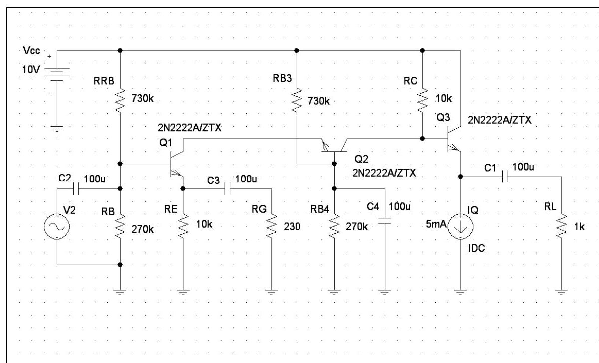
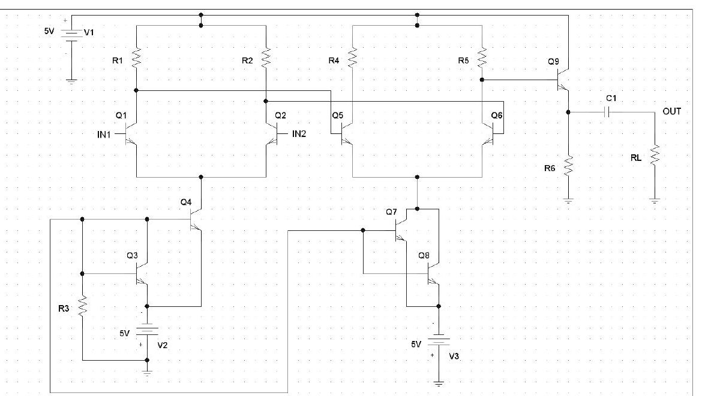

· EEM311
EEM311 Electronics II: Fall 2010 Homework, Multistage BJT Amplifier and Two-Stage Differential Amplifier Design
EEM311 – Elektronik II · 26.10.2010 · 16.10.2026
This post contains two homework assignments given in the Fall 2010 semester of the EEM311 Electronics II course in the Electrical-Electronics Engineering Department at Başkent University: Homework I (October 26, 2010) and Homework II (November 28, 2010). The homework sheets contain only the questions and circuit schematics; there are no solutions. The text of the questions is given below, with the circuit schematics shown as images taken from the assignments. The original PDFs of both assignments can be downloaded as a ZIP at the end of the post.
Homework I
1) For the circuit below, find:
- a) the input and output impedances,
- b) the voltage gain A_v,
- c) the zero-to-peak unclipped swing.

Component values in the circuit:
| Component | Value |
|---|---|
| V_CC | 10 V |
| Q1, Q2, Q3 | 2N2222A/ZTX |
| RRB, RB3 | 730 kΩ |
| RB, RB4 | 270 kΩ |
| RE | 10 kΩ |
| RG | 230 Ω |
| RC | 10 kΩ |
| C1, C2, C3, C4 | 100 µF |
| IQ (Q3 emitter current source) | 5 mA |
| RL | 1 kΩ |
2) Calculate the resistor and current values required for a circuit that satisfies the following conditions without distorting the signal:
- V_CC = 10 V
- R_L = 1 kΩ
- |A_v| = 200
- R_in ≥ 3 kΩ
- Unclipped swing at V_out ≥ 2.5 V
- V_E1 ≥ 1 V
Homework II

- Design the two-stage differential amplifier above so that its differential-mode gain is between 100 and 150 (C1 = 100 µF and R_L = 10 kΩ).
- Calculate the DC bias points of the transistors, and explain the function of each resistor and transistor.
- Calculate the CMRR.
In the schematic, the two collector outputs of the first stage (Q1–Q2) drive the bases of the second stage (Q5–Q6); the tail current of each stage is provided by a BJT current mirror (Q3–Q4 and Q7–Q8), and Q9 is an emitter-follower stage that passes the single-ended output to the load R_L. For the gain and CMRR relations of differential amplifiers, see the differential amplifier lab handout in the archived post "EEM311 Electronics II: Experiments 7–8".